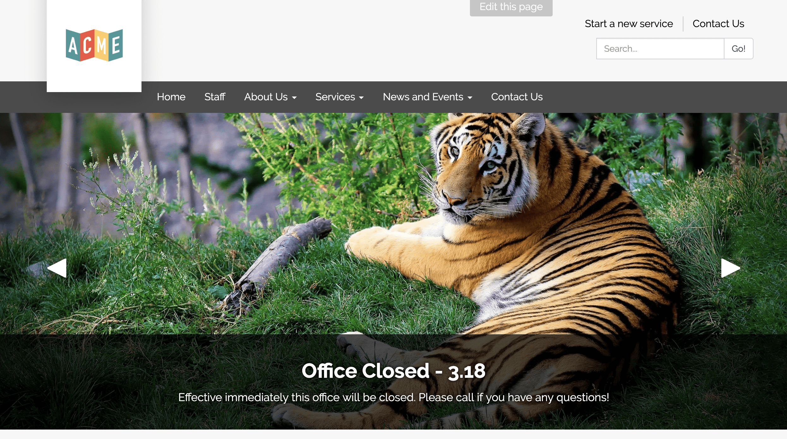

Responsive Website
Viewport Meta Tag
CSS Relative Unit
Body max width and horizontal center align
image fluid
two column flex and use media query with flex direction column
multi column: grid query
menu responsive will need js
